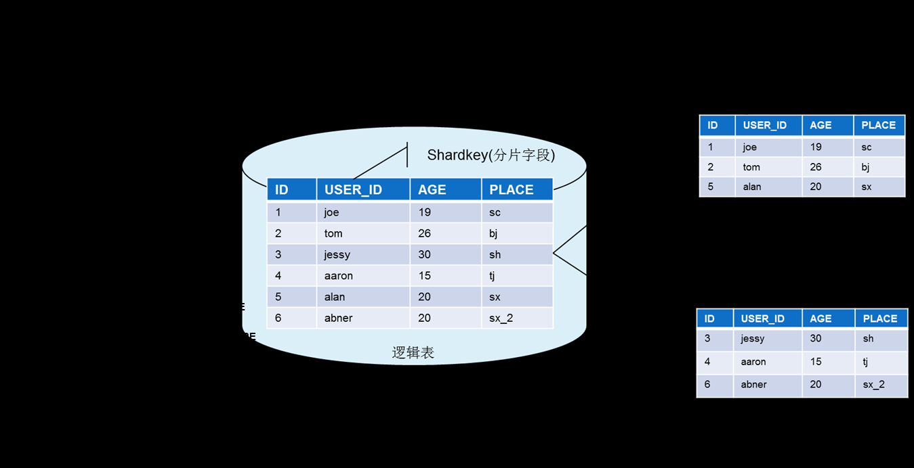
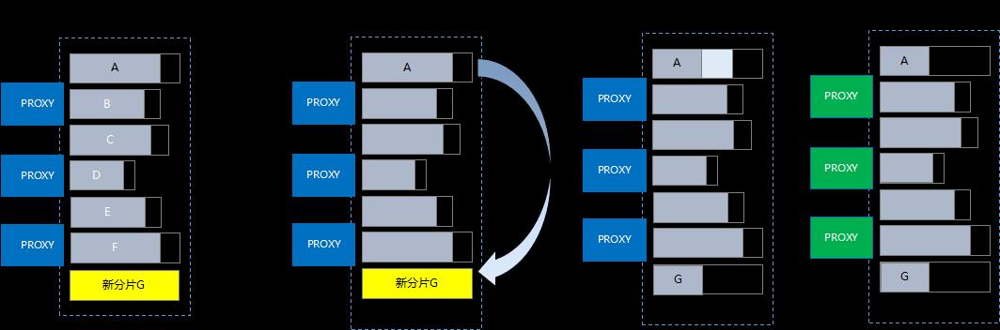
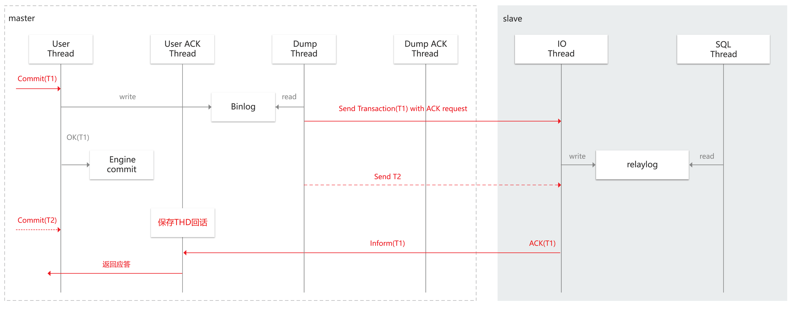

调研的文章
[toc]
本文根据腾讯云数据库官方文档，总结了
- MySQL版
- PostgreSQL版
两个数据库的总体架构、具体操作、计费等情况
由于数据库没有试用版，本文主要是通过阅读官方文档做出的总结
MySQL官方文档 -> 【链接】
PostgreSQL官方文档 -> 【链接】
MySQL版
总体概览
看展示的图片(控制台操作界面)，貌似是 MySQL8.x 改造的
单机分片最大量6T，最大QPS 24W
其原理是基于 shard-key做分片，这是目前已有的实现方案，这里的TProxy没找到介绍，可能是腾讯自己研发的，或者基于开源实现改造的

对原生MySQL新增的功能：
1、自动数据平衡
- 新增节时候，自动平衡数据，但会有几秒-几十秒的不可写
- 升级节点时，将旧节点数据->新节点，然后proxy指向新节点

2、复制方式
在 MySQL自己的强同步之上，增加了异步特性
比如 5个行程，处理10个事务，看性能测试 写和混合读写时候，比原生MySQL快 20-30%左右

3、shard-key，修改了MySQL语法，在创建表的时候指定了按哪个字段做分片
在写入的时候，必须指定分片字段，否则报错
SLA，99.95%
计费
计费方式：包年包月、按需计费
梯度计费
1、0 - 96 小时
2、96 - 360 小时
3、> 360小时
使用时间越长，价格越低
总费用 = 实例费用 + 备份空间费用（目前免费）+ 流量费用（目前免费）
实例费用 = 节点价格 × 节点数量 × 分片数量 = (节点内存 × 内存价格 + 节点硬盘 × 硬盘价格) × 节点数量 × 分片数量
价格列表，北上广最便宜
| 地区 | 内存价格(1元，一个月) | 磁盘价格(1元，一个月) |
|---|---|---|
| 广州、 北京、上海 | 45.90 | 0.324 |
| 成都、重庆 | 35.70 | 0.252 |
| 北京金融、深圳金融、上海金融 | 113.6 | 0.640 |
| 中国香港 | 68.85 | 0.540 |
| 弗吉尼亚、法兰克福 | 89.00 | 0.400 |
| 多伦多 | 91.50 | 0.600 |
| 孟买、新加坡 | 87.50 | 0.600 |
| 首尔、东京 | 66.00 | 0.750 |
具体操作
主要功能：
- 支持内网、外网访问
- 灾备/只读实例
- 安全管理
- 性能检测
- 慢查询分析
- 配置读写分离
- 备份
支持 单机 <-> 分布式环境互导入
分布式实例主要功能：
- 提供了灵活的读写分离模式
- 支持全局的 order by、group by、limit 操作
- 聚合函数支持 sum、count、avg、min、max 等
- 支持跨节点（set）的 join、子查询
- 支持预处理协议
- 支持全局唯一字段，支持 sequence
- 支持分布式事务
- 支持两级分区
- 提供特定的 SQL 查询整个集群的配置和状态
不支持的操作：
- 不支持自定义函数、事件、表空间
- 不支持视图、存储过程、触发器、游标
- 不支持外键、自建分区
- 不支持复合语句，如 BEGIN END、LOOP
- 不支持主备同步相关的 SQL
这里有完整的不支持的操作列表 -> 链接
连接，直接用mysql方式连接：
|
|
支持 php，JDBC
TDSQL MySQL版 实例会对 SQL 进行语法解析，有一定的限制，如果用户想在某个节点（set）中执行 MySQL 支持，但分布式实例不支持的 SQL 时，可以使用透传 SQL 的功能。
分布式表类型：
- 分表
- 单表(普通表)
- 广播表
建分表，多了一个 shardkey 语法
|
|
广播表:
|
|
单表：
|
|
API
安全组相关
- 查询实例安全组信息
- 查询项目安全组信息
- 安全组批量解绑云资源
- 修改云数据库安全组
分布式数据库相关操作
- 取消DCN同步
- 克隆实例账户
- 关闭外网访问
- 复制账号权限
- 创建账号
- 创建DCDB分布式实例
- 创建独享集群DCDB实例
- 删除账号
- 查询账号权限
- 查询账号列表
- 获取日志列表
- 查看数据库参数
- 查询同步模式
- 获取实例节点信息
- 查询实例列表
- 新购分布式数据库实例询价
- 续费实例询价
- 查询分布式数据库可售卖地域和可用区信息
- 查询分片信息
- 查询变配分布式数据库实例价格
- 查询数据库对象列表
- 查询数据库表信息
- 查询数据库列表
- 获取实例灾备详情
- 查询流程状态
- 查询订单信息
- 查询项目列表
- 查询分布式数据库可售卖分片规格
- 获取SQL日志
- 拉取用户任务列表
- 销毁已隔离的包年包月实例
- 销毁按量计费实例
- 切分Binlog
- 设置账号权限
- 初始化实例
- 修改数据库账号备注
- 修改实例所属项目
- 修改数据库参数
- 修改同步模式
- 修改RS的访问策略
- 开通外网访问
- 续费分布式数据库实例
- 重置账号密码
- 升级分布式数据库
总结
总结
- 从官方文档看，对原生MySQL改动不多，基本上可以认为就是原生MySQL的简单增强
- 原生MySQL也有集群、主备、主从等高可用方案从，从文档上看基本上都是业界通用的方案
- 对MySQL的语法有一些修改，主要是配合分布式方面做的改动，基本上还是兼容MySQL语法，可以用JDBC直连
- 分布式数据库的底层运维不知道是怎么做的，只是从SLA(99.95%)看基础运维应该还可以
- API比较偏运维层面，运营的API基本没有
- 使用需要付费，目前没有免费试用的
PostgreSQL版
总体概览
PostgreSQL版本同时支持OLAP、OLTP两种方式
支持地理位置、NoSQL等，这些应该都是用原生PostgreSQL的方式实现
主要功能：
- 分布式JOIN计算，这个可能是基于GreenPlum实现
- 审计、脱敏、数据加密
- 冷热分离
- 多级容灾
- 强同步复制
- 主从高可用
- 基于时间点的恢复功能
- 分布式事务
- 兼容PostgreSQL语法
TDSQL PostgreSQL版 采用无共享 share nothing 架构。数据库实例分为三种节点：
- 协调节点（ Coordinator，CN）：是数据库服务的对外入口，负责数据的分发和查询规划，多个节点位置对等。
- 数据节点（Datanode，DN） ：负责执行协调节点分发的执行请求，实际存储业务数据。
- 全局事务管理器（GlobalTransactionManager，GTM）：负责全局事务管理。

PostgreSQL版，采用了主从模式，写主，读从
OLTP运行在主节点，OLAP运行在从节点，二者之间通过流复制的方式实现同步
PostgreSQL 官方文档上面没有找到服务协议相关的说明
计费
内存价格：
| 内存规格（GB） | 广州（元/GB/月） | 上海（元/GB/月） | 北京（元/GB/月） | 香港（元/GB/月） |
|---|---|---|---|---|
| 0GB - 24 GB （不含24GB） | 51 | 51 | 51 | 86 |
| 24GB - 96 GB （不含96GB） | 46 | 46 | 46 | 85 |
| 96GB及以上 | 45 | 45 | 45 | 72 |
磁盘价格：
| 地域 | 单价（元/GB/月） |
|---|---|
| 广州、上海、北京 | 0.36 |
| 香港 | 0.60 |
跟MySQL类似，PostgreSQL也有梯度计费的方式
计费公式：
总费用 = 实例费用 + 备份空间费用（目前免费）+ 流量费用（目前免费）
其中，实例费用 = (节点总内存数 × 内存价格 + 节点总磁盘数 × 磁盘价格) × 时长
具体操作
优化SQL，可以通过命令行方式，explain给出调优建议，链接
- 查看是否为分布式键查询
- 是否使用索引
- 是否为分布式key join
- 查看join发生节点
- 查看并行的worker数
- 查看各节点的执行计划是否一致
建表 不支持shard-key，会默认分配一个shard-key
|
|
指定shard-key
|
|
创建范围分区表
|
|
冷热分区表
|
|
分布式表和视图类型：
- 分区表
- 范围分区，range，list，时间
- 冷热分区
- 逻辑分区
- 多级分区
- 物化视图
总结
PostgreSQL版本跟MySQL版差别比较大
- 文档上没有介绍专门定制开发的功能，看起来所有的功能基本上都是原生PostgreSQL或者插件的
- 计费方式基本上跟MySQL差不多
- SQL的优化，分区设置什么的比MySQL版的强，但主要依赖于PostgreSQL
- 没有API，管理运营都比较弱
- 目前看就是原生PostgreSQL+插件，比较难的底层存储运维不知道是怎么实现的